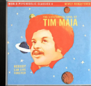

Tim Maia – Nobody Can Live Forever
Esse disco internacional apresenta uma coletânea de músicas icônicas do artista, destacando sua versatilidade e o poder do soul brasileiro no cenário mundial.
Principais músicas:
- “What You Want to Bet”
- “Nobody Can Live Forever”
- “New Love”